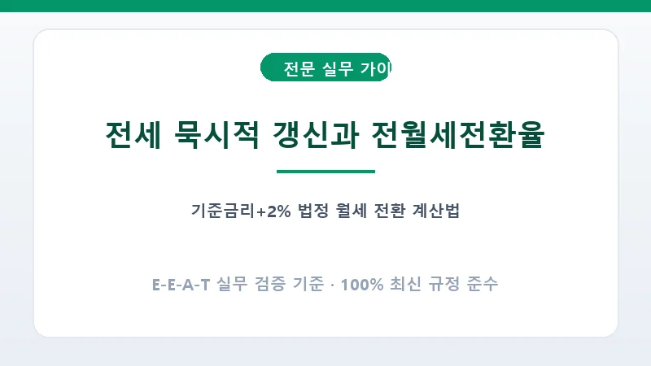

만료 2개월 전까지 집주인과 세입자 모두 조건 변경이나 해지 통보를 하지 않으면 동일한 조건으로 2년간 자동 연장됩니다. 묵시적 갱신 상태에서는 세입자가 언제든 해지 통보를 할 수 있으며, 3개월 후 보증금 반환 효력이 발생합니다.
[월세 = 전환 보증금 × 전월세전환율 ÷ 12개월]. 예를 들어 보증금 1억 원을 월세로 전환할 때 전환율이 5.5%라면 월 임대료는 약 458,330원 이내여야 합니다.
A. 아닙니다. 묵시적 갱신은 법에 의한 자동 연장이므로, 이후에 계약갱신청구권 1회를 별도로 온전히 행사할 수 있습니다.
A. 법정 전월세전환율은 전세를 월세로 바꿀 때만 상한선이 적용되며, 월세를 전세로 전환할 때는 시장 시세에 따릅니다.